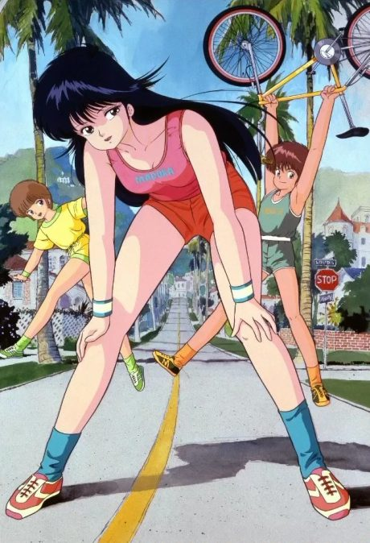

Shakugan no Shana
灼眼のシャナ
Yuji learns he's already dead and has been replaced by a temporary copy, and is protected by Shana, a girl who hunts creatures that feed on humans.
The anime covers the whole light novel.
7.0AniList score
—Animeter, no votes yet
72episodes, 3 seasons
Rate it or report where you stopped
Is it worth pushing through?
Built from what visitors report across all 3 seasons (72 episodes).
Loading reports…Checking what other people said about this one.
Sign in above with your email to add your report.
More like Shakugan no Shana
 Manga Ch. 1818.4
Manga Ch. 1818.4
 Done8.4
Done8.4
 Done7.7
Done7.7
 Original7.5
Original7.5

Unclear7.1 Manga Vol. New Testament 17.0
Manga Vol. New Testament 17.0
 Manga Ch. 307.6
Manga Ch. 307.6
 Manga Ch. 577.6
Manga Ch. 577.6
 Original7.3
Original7.3
 Manga Ch. 1118.0
Manga Ch. 1118.0
 Film7.9
Film7.9
 Manga Vol. 206.8
Manga Vol. 206.8